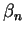
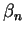

In their model, Hodgkin and Huxley represented the rate of change of the potassium activation variable n as a rate equation for a first-order kinetic process:
The modern interpretation of this equation is that the opening of a K
channel involves the motion of four physical gates between "permissive" and
"non-permissive" states. If all gates are in a the permissive state, then
the channel is open, and ions are allowed to flow. In a population of
channels, n is the fraction of gates that are open. Thus, the
conductance of these of channels is proportional to the fourth power of
n. Here,  is the voltage-dependent rate constant for
transitions to the permissive state, and  is the rate
constant for transitions to the non-permissive state. By comparison with
Eq. 4, we can see that
is the voltage-dependent rate constant for
transitions to the permissive state, and  is the rate
constant for transitions to the non-permissive state. By comparison with
Eq. 4, we can see that
Likewise, the Na activation and inactivation variables obey the equations
with similar relationships between the rate constants and the activation variables and their time constants.
From their voltage clamp measurements of the activation variables and their time constants, Hodgkin and Huxley were able to make the empirical fits:
Here voltages are measured with respect to a resting potential of zero (rather than the actual value of about -70 mV), and are given in mV. With these expressions for the rate constants, one can numerically solve Eqs. 6, 9, and 10 for the time dependence of the activation variables, and use these in Eqs. 2 and 5 to solve for the conductances. These can then be used in Eq. 1 to solve for the time behavior of the membrane potential.
As we will see in the next lecture on the Traub hippocampal pyramidal cell model, there are many other varieties of voltage-activated conductances found in neurons, in addition to those found in the squid giant axon. Most of these can be modeled using variations of the Hodgkin-Huxley model, with a similar notation, but with different values of the parameters and different values of the exponents for activation and inactivation. Some modelers use equations similar to Eqs. 11-16, and others use expressions for the steady-state activation and time constant, which can be related to these by Eqs. 7 and 8.
These simulation examples were made with the GENESIS Squid tutorial. The help menu for this tutorial suggests further experiments and exercises involving the Hodgkin-Huxley model. Chapter 4 of The Book of GENESIS provides further details and gives additional theoretical and historical background. It is also worth reading the original paper:
Hodgkin, A. and Huxley, A. (1952). A quantitative description of membrane current and its application to conduction and excitation in nerve, J. Physiol. (London) 117: 500-544.
For the details of implementing models of ionic conductances in GENESIS, see chapters 7, 14 and 19 of The Book of GENESIS.